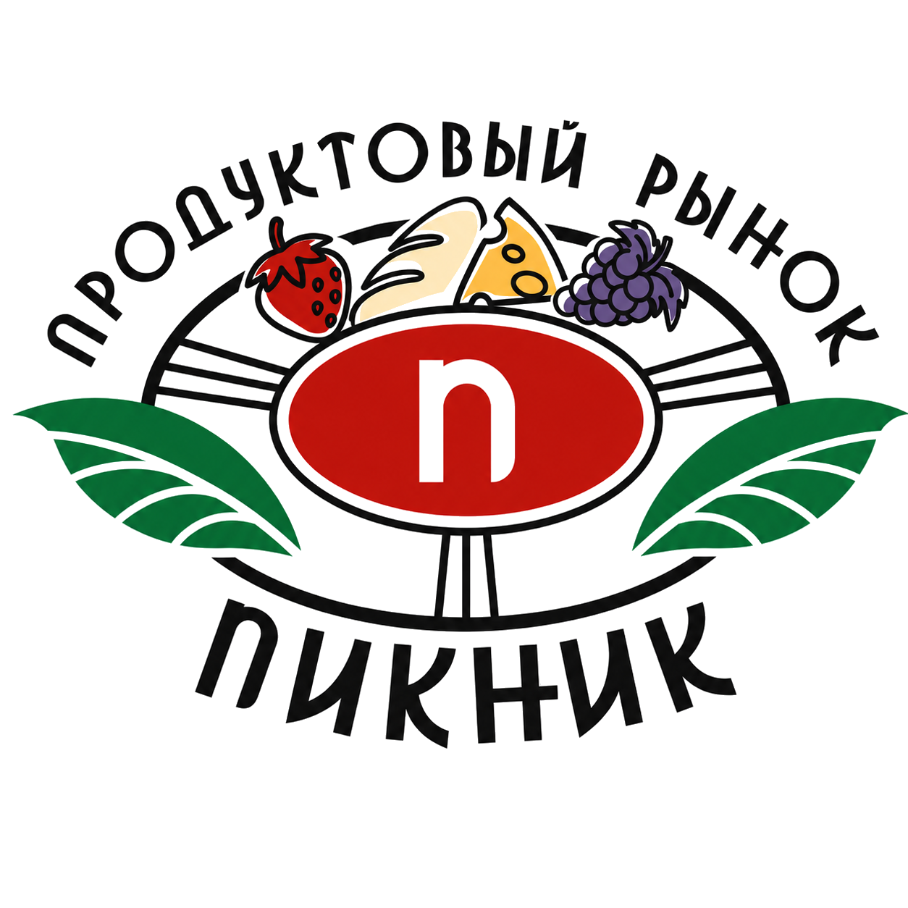
ГЕООТЧЁТ
Геоаналитический отчёт по локации
ПИКНИК
Семейное гастрономическое пространство
Московская обл., Одинцово, пгт Новоивановское, ул. Западная, стр. 4
2026
✔
ЛОКАЦИЯ
ОПТИМАЛЬНА
Локация отлично подойдёт как для продуктового рынка, так и для любого другого объекта, ориентированного на проживающее население и на трафик.
листайте ниже, чтоб узнать подробнее
Локация
ПИКНИК у Минского шоссе · окружение
Обзорный вид ПИКНИК: севернее М-1, жилой массив (Инновация, школы, конкуренты) — южнее
Продуктовая конкуренция рядом
Кто продаёт продукты в зоне
| Формат | Кто рядом |
|---|
| Рыночный / фермерский | Каравай (экорынок); Белорусский фермер |
| Качественные сети | Азбука Вкуса; ВкусВилл |
| Массовые сети | Пятёрочка, Магнит, Перекрёсток, Лента |
ПИКНИК конкурирует не с числом рынков, а с плотной продуктовой средой. Отличие — в связке: свежие продукты, готовая еда, доверие и семейный визит.
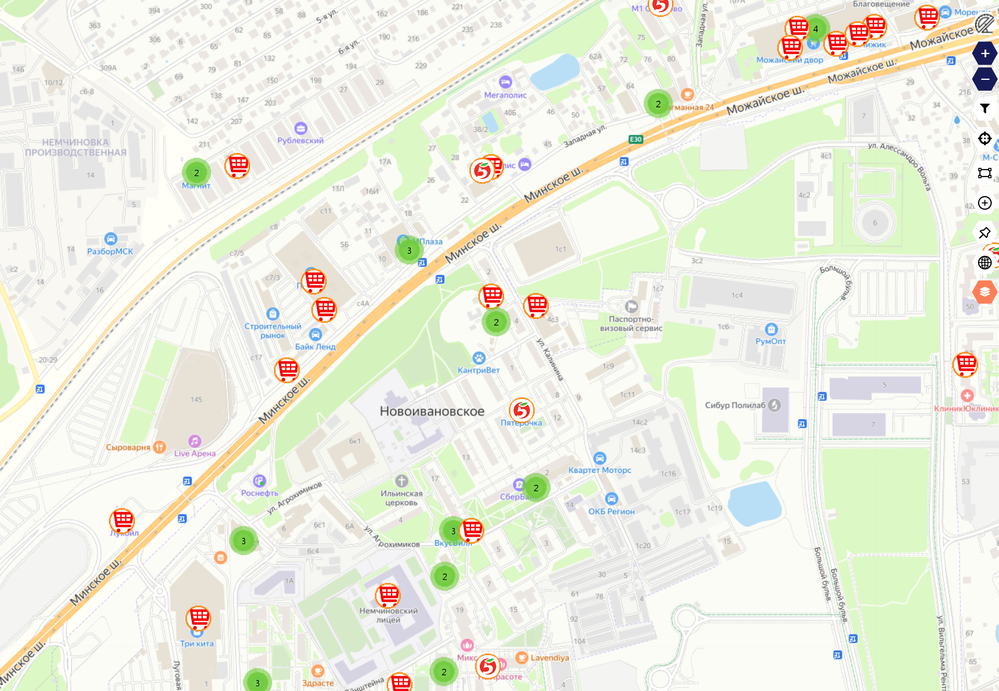
Продуктовые магазины в зоне · Geointellect / 2GIS
Близкие ЖК и апартаменты
Жилой и апарт-слой рядом — считать раздельно
| Объект | Что это | Как считать |
|---|
| М1 Сколково | апарт-/гостиничный (1792 нежилых помещения) | отдельно, не как квартиры |
| Sky Skolkovo | апарт-/гостиничный (606 нежилых помещений) | отдельно, не как квартиры |
| УНО. Горбунова | будущий жилой комплекс (544 квартиры) | будущая база, ввод 2028 |
| ЖК Инновация | близкий жилой массив | маршрут проверять отдельно, не исключать |
Жилой и апарт-слой рядом нельзя складывать в одну строку. М1 и Sky дают фактических жителей, но юридически это не квартиры; УНО. Горбунова — будущая база, не аудитория запуска 2026.
Районы вокруг ПИКНИК
Официальная численность территорий
| Территория | Численность | Как читать |
|---|
| Новоивановское | 13 705 | ближайшая официальная территория |
| Немчиновка | 12 648 | рядом, но барьер железной дороги |
| Заречье | 11 609 | платёжеспособный сосед, не прямая база |
| Одинцово | 189 797 | крупный слой в авто-доступности |
| Одинцовский округ | 488 473 | широкий районный контекст |
ПИКНИК — внутри крупной западной жилой зоны. Но официальная численность района ≠ аудитория точки: важны доступность, маршруты, барьеры и повод приехать.
От географии — к аудитории запуска
Какие группы и каналы важны первыми
| Геослой | Кто это | Как использовать |
|---|
| Пешая зона | ближайшие жители и люди у ТВЦ | быстрые заходы, короткие покупки |
| Авто 5–15 минут | Новоивановское, Инновация, М1/Sky | закупка домой, готовая еда, семейный визит |
| Минское направление | люди, которые едут мимо | наружная реклама, навигация, понятный повод заехать |
| Продуктовая среда | сети, ВкусВилл, Азбука, Каравай | объяснить отличие ПИКНИК |
| Апарт-жилой слой | М1 / Sky | отдельная коммуникация, не обычные семьи из ЖК |
Геоаналитика показывает, какие группы и каналы запуска важны первыми. Внутри стартовой аудитории — несколько сегментов, а не один поток.
ПИКНИК
Анализ
Подробные показатели геоаналитики по слоям: проживающие, доход, чек, выручка, трафик, возраст.
Анализ проживающих
Радиус 500 м · жилой массив южнее М-1
7 963
Домохозяйств в радиусе 500 м
Geointellect
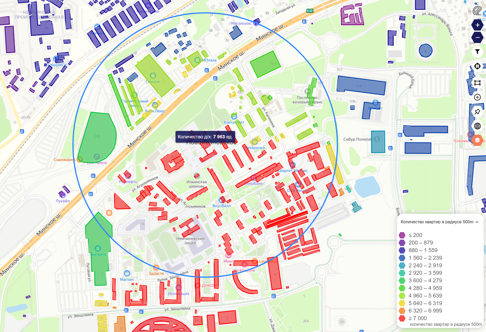
Количество квартир в радиусе 500 м · Geointellect
Анализ проживающих
Радиус 500 м
1 321
Домохозяйств в радиусе 500 м
Geointellect
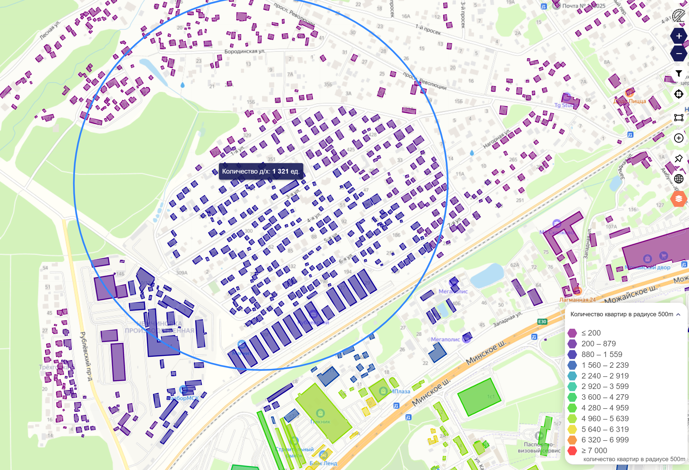
Количество квартир в радиусе 500 м · Geointellect
Анализ проживающих. Уровень доходов
Новоивановское · радиус 500 м
368 тыс ₽/мес
Средний доход семьи из 2 чел.*
Geointellect101 %
Отношение среднего дохода в зоне к среднему доходу по городу
Анализ зоны. Средний чек
Новоивановское · покупательная среда
≈ 7 000 ₽
Средний чек в зоне
Geointellect · ФНС
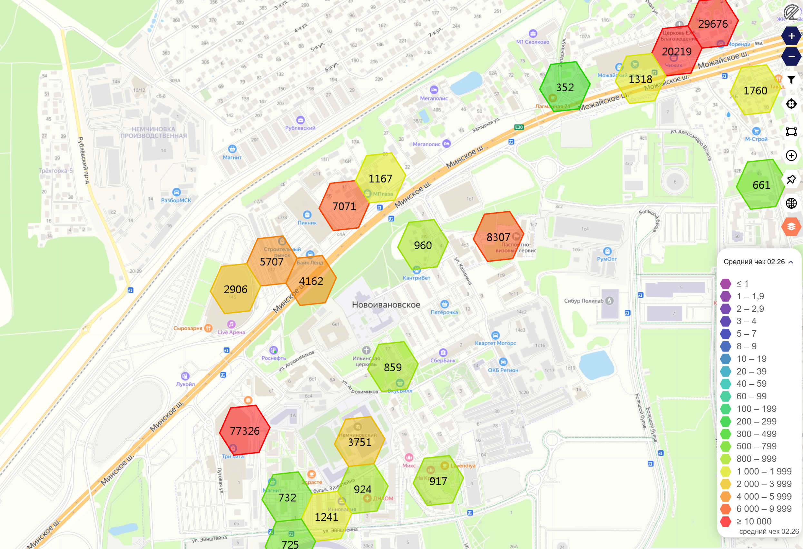
Средний чек по ячейкам (hexbin) · Geointellect
Анализ зоны. Выручка объектов
Новоивановское · недельная выручка объектов в зоне
≈ 55 млн ₽/нед
Недельная выручка объектов в зоне (красным у ПИКНИКа)
Geointellect
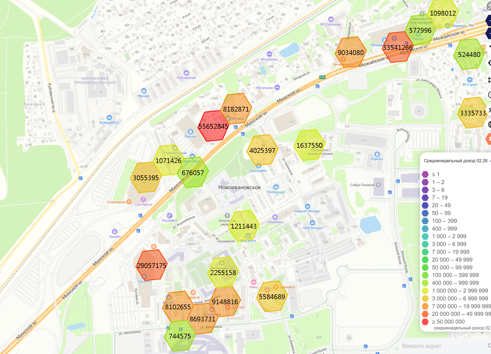
Недельная выручка объектов по ячейкам (hexbin) · Geointellect
Анализ трафика. Автомобильный
Уникальные автомобили в сутки
17 896
Уникальных авто в сутки в ячейке у ПИКНИК
Geointellect
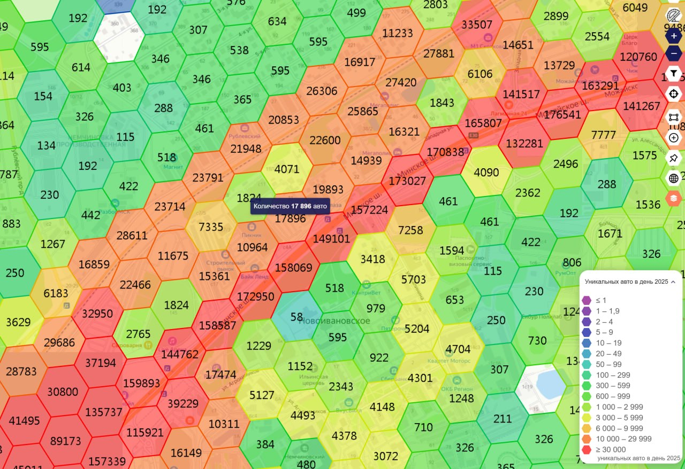
Уникальные авто в сутки по ячейкам (hexbin), 2025 · Geointellect
Анализ трафика. Автомобильный
Неуникальные проезды в сутки (поток по М-1)
120–170 тыс
Неуникальных проездов в сутки по Минскому шоссе
Geointellect
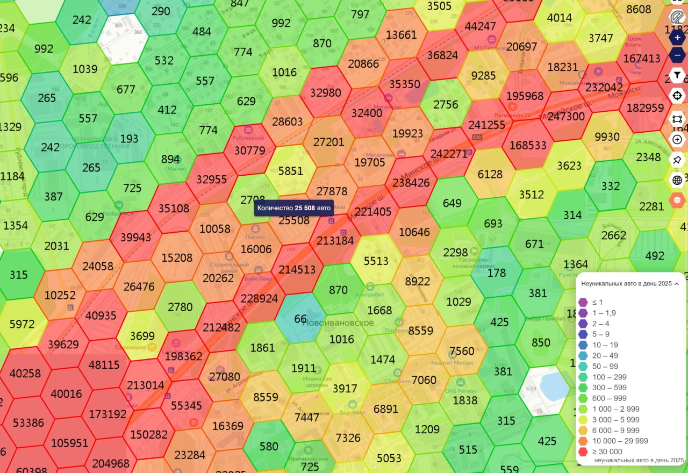
Неуникальные авто в сутки по ячейкам (hexbin), 2025 · Geointellect
Анализ трафика. Автомобильный. По дорогам
Как идёт автопоток по улицам
Неуникальные автомобилисты в сутки по дорогам · Geointellect
Анализ трафика. Пеший
Уникальные пешеходы в сутки
2 286
Уникальных пешеходов в сутки в ячейке у ПИКНИК
Geointellect
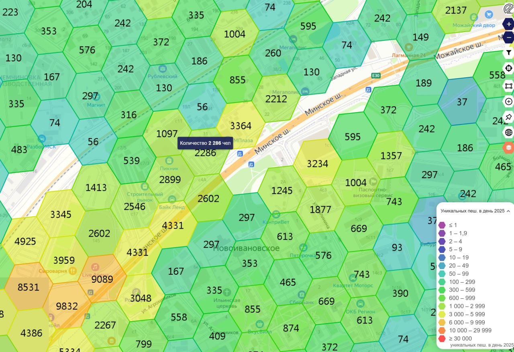
Уникальные пешеходы в сутки по ячейкам (hexbin), 2025 · Geointellect
Анализ трафика. Пеший
Неуникальные пешеходы в сутки
4 588
Неуникальных пешеходов в сутки в ячейке у ПИКНИК
Geointellect
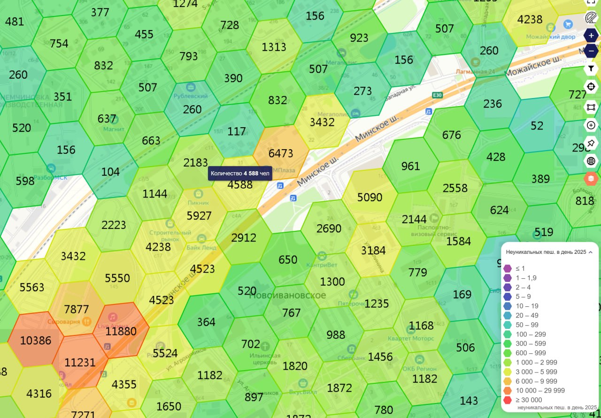
Неуникальные пешеходы в сутки по ячейкам (hexbin), 2025 · Geointellect
Анализ трафика. Пеший. По дорожкам
Как идёт пеший поток по дорожкам
Неуникальные пешеходы в сутки по дорожкам · Geointellect
Анализ трафика. Пеший. Народные тропы
Реальные пешеходные маршруты к точкам притяжения
Народные тропы — реальные пешеходные маршруты · Geointellect
Анализ проживающих. Возраст
Доля взрослых 25–49 лет
≈ 33 %
Доля взрослых 25–49 лет в зоне
Geointellect
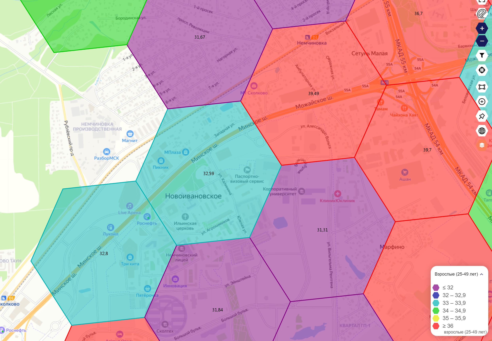
Доля взрослых 25–49 лет по ячейкам (hexbin) · Geointellect
Выводы по локации
Что геоаналитика говорит о месте ПИКНИК
Сильные стороны
- Высокий доход: район в верхней части шкалы, доход семьи — на уровне среднего по Москве.
- Большая жилая база рядом — Новоивановское и соседние территории, плюс новые жилые и апарт-комплексы.
- Мощный автомобильный поток по Минскому шоссе — постоянные контакты с трассы.
- Живой продуктовый спрос: рядом много магазинов — люди уже привыкли покупать продукты регулярно и качественно.
- Район активно развивается — новое строительство и приток жителей.
На что обратить внимание
- Высокая конкуренция за регулярную покупку — нужно понятное отличие ПИКНИК.
- Барьер Минского шоссе: с жилой стороны удобнее заезжать на машине.
Вывод: локация сильная и растущая. ПИКНИК заходит в платёжеспособный, активно развивающийся район с большим трафиком. Для формата ТВЦ со свежими продуктами, готовой едой и семейным сценарием здесь хорошие перспективы — а арендаторам это даёт поток и платёжеспособного покупателя.